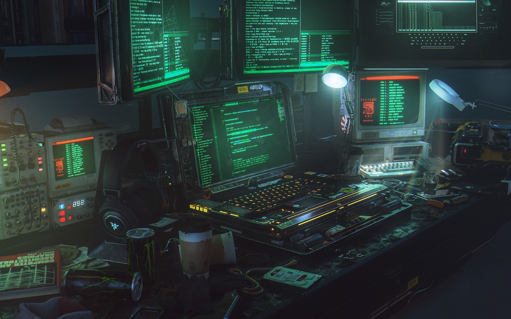

About Me

Security researcher & hardware hacker.
I break and build things across the stack — from web and binary exploitation to firmware and radios. I write exploit proof-of-concepts, tinker with microcontrollers and wireless, and spend my spare cycles on cryptography, number theory, and CTFs.
- Exploit development & vulnerability research
- Embedded / hardware hacking & wireless
- Cryptography, cryptanalysis & number theory
- Capture-the-flag & write-ups
Research & Experiments
Cicada 3301 — Cracking the Liber Primus
An evidence-based cryptanalysis of the Cicada 3301 Liber Primus. I built a dependency-free C++ toolkit that reproduces every solved page exactly, then used the Index of Coincidence and a battery of statistical probes to show why the remaining ~57 pages resist attack — identifying the cipher family, the 17σ doublet-suppression signal, and auditing the popular “27×27 totient map” proposal.
Stereogram Analyzer
Recovering hidden depth maps and 3D point clouds from autostereograms (Magic Eye images) — period estimation, block-matching depth, and a live in-browser viewer.
Euler's Totient
Exploring Euler's totient function φ(n) — the number-theory backbone behind RSA key generation and modular arithmetic.
CTF Write-ups
Solutions and notes from capture-the-flag challenges — web, binary, crypto, and forensics.
My Blog
Cracking (and Not Cracking) Cicada 3301
Reproducing the solved pages of the Liber Primus with a small C++ toolkit, then using the Index of Coincidence and a battery of statistical probes to prove why the remaining ~57 pages have resisted the internet for over a decade — plus an evidence-based review of the popular “27×27 totient map” solution.
Seeing Through Magic Eye
Recovering the hidden 3D surface encoded inside single-image autostereograms — and a live in-browser port.
Rendering the Gyroid
One implicit equation plus marching cubes gives an infinite minimal surface that never intersects itself.
Watching Big-O Happen
Computing π the slow way and plotting its runtime live, so you can see linear time complexity emerge.
The Shape of Euler’s Totient
Computing φ(n) and plotting it — where scattered points draw the structure behind RSA.
CTF Write-ups
Solutions and notes from capture-the-flag challenges — the approach, the trick, and the solve script.
GET IN TOUCH
- Muscat, Oman